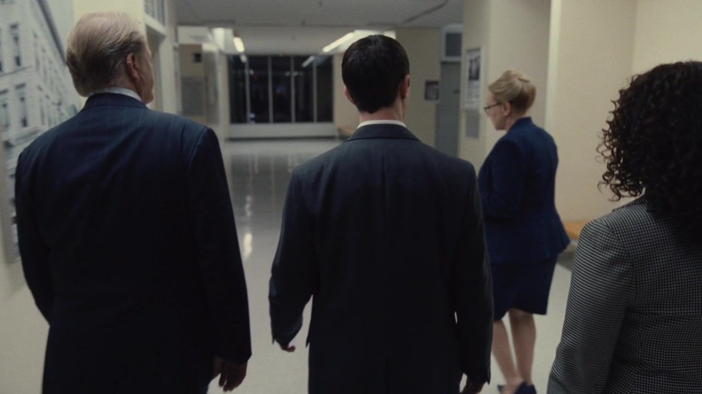
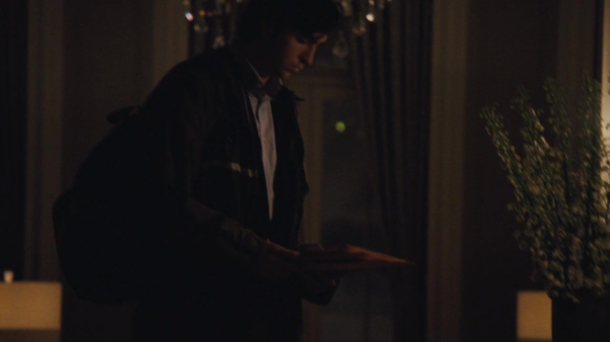
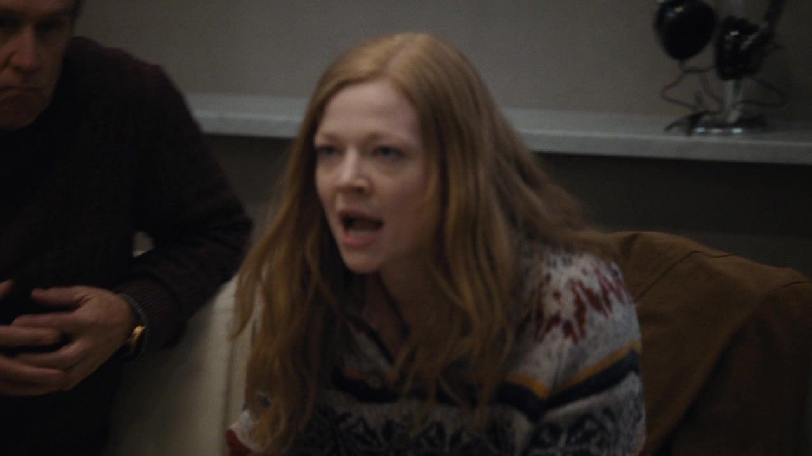
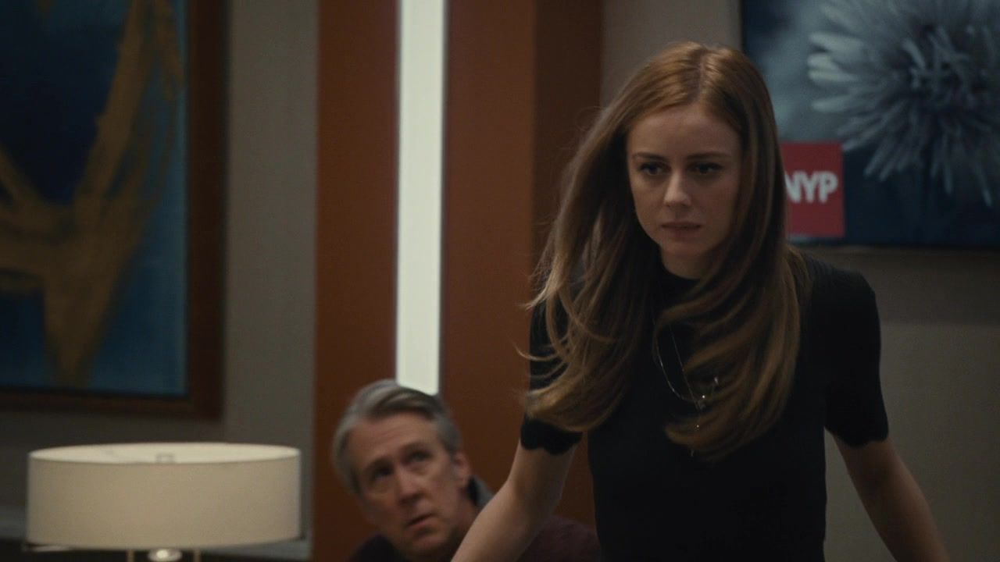
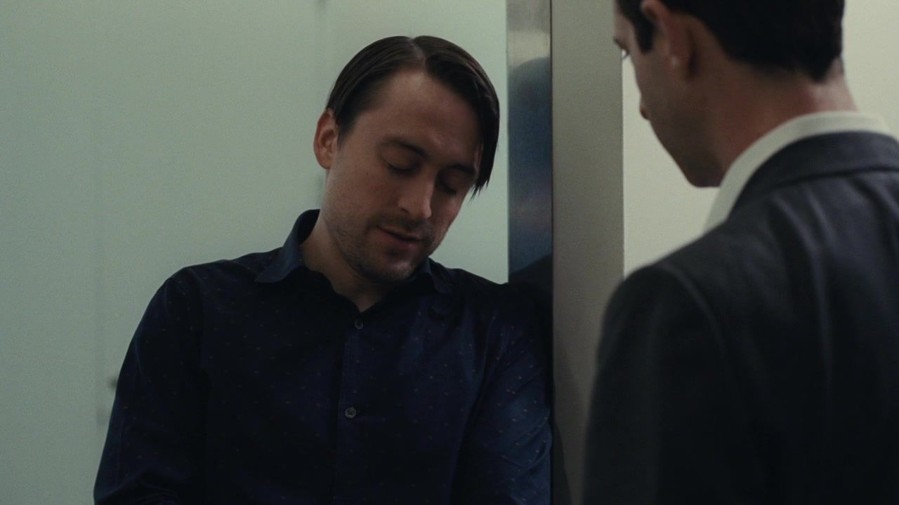
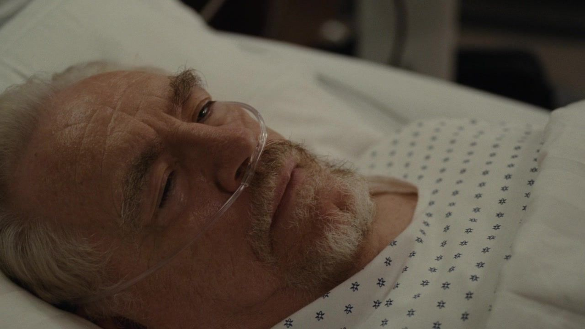

01 / THE STORY
一个漫长的夜晚，
九次临时的决定。
按本集主线分为三幕；并行发生的谈话与善后，保留其交错关系。
NINE TURNSIACT I / SCENES 01—03
等待诊断先争取确定，再暴露分歧。
01医院 / 深夜抵达
他先是儿子，随后被叫去当负责人。
剧情事实肯德尔赶到医院，询问父亲状况。高管同时提出，公司必须尽快确认领导安排。 [1] [2]
这一场为什么重要 个人解读
悲伤与职业反应并非先后发生。肯德尔既害怕失去父亲，也知道自己可能是必须站出来的人。这让他的每句话都容易被怀疑：是在负责，还是在利用时机？首集的接班愿望，第一次遇到不能靠愿望解决的现场。
权力的变化私人危机立刻牵动公司的公开秩序。
病房外 / 医疗讨论
财富能请来更多意见，不能保证同一个答案。

↗家属与医务人员在医院通道中的画面。｜HBO · 本集截图剧情事实家属讨论医生、治疗与转院可能。希芙希望继续寻找选择，玛西娅倾向维护现有照护安排。 [1] [2]
这一场为什么重要 个人解读
继续寻找办法是一种关心，减少折腾也可能是一种关心；两者不必先被判成恶意。但谁能定义最佳照顾，等于谁能接近病人、掌握消息。对医疗判断的争议，很快带上了长期家庭位置的差异。
权力的变化照护决定同时成为接近父亲的权限问题。
临时商议 / 原定预案
纸上的接班计划，遇到生日当天的反悔。
 ↗家属与高管在医院讨论领导安排。｜HBO · 本集截图
↗家属与高管在医院讨论领导安排。｜HBO · 本集截图剧情事实原有预案涉及肯德尔担任代理 CEO、弗兰克继续任 COO，但洛根刚撤换弗兰克并否定肯德尔，兄妹对可用方案产生争执。 [1] [2]
这一场为什么重要 个人解读
规则并不是完全不存在，而是与父亲最近的口头决定互相冲突。人人都可以选出一段最有利的父亲意愿，证明自己的方案才算忠诚。当个人意志长期高于制度，个人一旦失语，组织便很难得到唯一答案。
权力的变化同一位父亲，留下互相抵触的授权。
这一幕之后他们还不知道父亲能否恢复，却已经知道公司需要一个可以对外确认的人。
IIACT II / SCENES 04—06
命令在转手小差事里藏着不同阵营。
04洛根住处 / 格雷格跑腿
一份文件，要听谁的话才能带回来？

↗格雷格回到洛根住处取物的同场画面。｜HBO · 本集截图剧情事实玛西娅派格雷格取物，罗曼要他顺便带信托文件，希芙却另行要求他不要带来。格雷格最终没有把文件带回。 [1] [2]
这一场为什么重要 个人解读
差事本来只是搬运，冲突的命令却迫使新人选择。他没有足够资格正面拒绝任何一个人，只能靠含混与遗漏降低风险。看起来最不起眼的人，第一次被放到文件是否出现的关键位置；信息流动开始依赖他的判断。
权力的变化跑腿的人获得了有限却真实的选择权。
医院 / 希芙与罗曼
谈不拢的成年人，又变回争抢的孩子。

↗医院中希芙与罗曼争执的同场反应镜头。｜HBO · 本集截图剧情事实希芙和罗曼围绕接班、签字等问题冲突升级，发生肢体扭打；不同意肯德尔，并没有让两人自然站成一个阵营。 [1] [2]
这一场为什么重要 个人解读
身体冲突把精致措辞戳破。他们可以讨论股权与高管安排，也仍然知道怎样在兄妹之间刺痛对方。父亲缺席后，争夺没有立刻变得理性；没有谁拥有足够公认的权威来让大家停下。
权力的变化反对同一个方案，不等于拥有共同方案。
等候期间 / 汤姆与希芙
他想用求婚，让最坏的一天出现一件好事。

↗医院等候区的希芙；用于人物辨认，不指认求婚动作瞬间。｜HBO · 本集截图剧情事实汤姆在医院向希芙求婚，表示希望在父亲仍在时带来一些好事。希芙惊讶于时机，最终接受。 [1] [2]
这一场为什么重要 个人解读
汤姆可以同时真心爱她，又看见关系更进一步的机会。这场求婚令人不安，正因为它没有办法从现场剥离：希芙正经历最脆弱的时刻，接受承诺能带来安定，也让她很难像在平静日常里那样衡量。
权力的变化亲密承诺与家族危机发生了绑定。
这一幕之后签字、取物与求婚，都在改变家人与外来者的关系；父亲的沉默没有终止权力。
IIIACT III / SCENES 07—09
接住空位职位有了名字，问题才露出重量。
07家属之间 / 临时职位
肯德尔拿到 CEO，罗曼也拿到自己的条件。

↗罗曼与肯德尔商谈临时职务安排。｜HBO · 本集截图剧情事实经过争论，肯德尔成为代理 CEO，罗曼担任 COO。安排先解决眼前领导问题，并不代表所有人已信任肯德尔。 [1] [2]
这一场为什么重要 个人解读
这次协议靠分配职位收拢分歧，而不是消除分歧。临时负责人有了名字，兄妹仍各自保留立场。肯德尔得到行动资格，也接受了一个限制：他的权威既来自紧急需要，又依赖其他人的暂时同意。
权力的变化协议先让公司运转，未让家族达成和解。
医院窗边 / 杰丽的告知
他以为接到公司，先接到一笔旧债。
 ↗医院窗边：杰丽向肯德尔说明公司债务问题的同场镜头。｜HBO · 本集截图
↗医院窗边：杰丽向肯德尔说明公司债务问题的同场镜头。｜HBO · 本集截图剧情事实杰丽告诉肯德尔，公司背后存在约三十亿美元的重大债务问题。此前掌握情况的核心人物很少。 [1] [2]
这一场为什么重要 个人解读
这份信息重新定义了接班。外界看见的是谁坐上高位，接手的人开始看见旧决定留下的限制。洛根曾以儿子不够成熟为由拒绝交接，却也没有把全部处境交给他；现在判断儿子的表现，必须记得他并非在一张空白桌面上开始。
权力的变化职位带来的信息，迅速变成职位必须承担的负担。
病房 / 洛根醒来
他们替父亲作完决定，父亲睁开了眼。

↗本集结尾：病床上的洛根。｜HBO · 本集截图剧情事实漫长等候之后，洛根在病床上醒来。家人此前达成的安排仍处在应急性质之中。 [1] [2]
这一场为什么重要 个人解读
这是令人安心的生命消息，也是让权力结构重新悬起的消息。肯德尔不可能只把它听成好或坏，因为他想救父亲，也刚开始尝到独立负责的重量。结尾没有替他解决这个矛盾，而是让两个身份继续共存。
权力的变化临时接班开始了，永久认可仍未到来。
这一幕之后肯德尔得到临时职位，也接过自己此前并不知道的债务；父亲醒来，临时安排更没有变成永久认可。